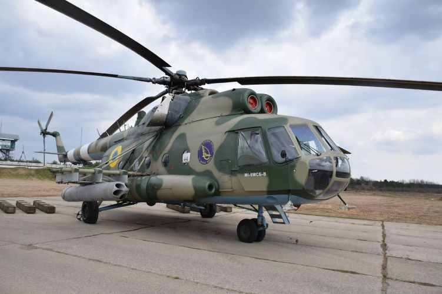
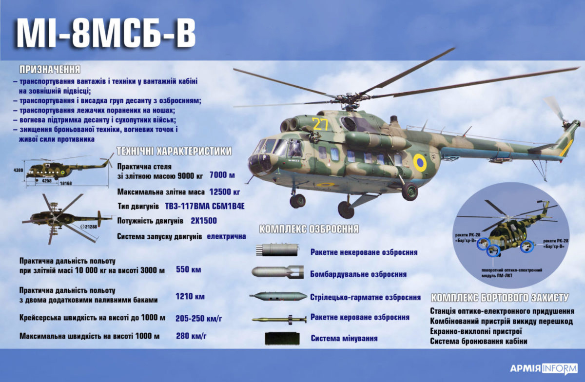

Мі-8МСБ-В
Мі-8МСБ — український варіант модернізації радянського багатоцільового вертольота Мі-8, розроблений компанією «Мотор Січ».
Під час модернізації Мі-8 до рівня Мі-8МСБ-В встановили турбовальні двигуни ТВ3-117ВМА-СБМ1В серії 4Е виробництва «Мотор Січ» з електронним запуском, частково посилили несучі елементи і реконструювали фюзеляж, встановили нову систему запуску двигуна. При цьому редуктор двигуна з пропускною спроможністю 2,5тис. кс збережений без змін.
У ході випробувань було встановлено, що в разі виходу з ладу одного з двигунів, вертоліт здатний злетіти на одному двигуні в режимі перевантаження.
Згідно з даними виробника, модернізація дозволяє продовжити льотний ресурс вертольота на 2 тис. льотних годин або 8 років експлуатації з можливістю подальшого продовження ресурсу вертольота до 16 років.
Військовий вертоліт Мі-8МСБ-В у ході модернізації отримує додаткове обладнання: нові системи збору, реєстрації та обробки польотної інформації, аварійний радіомаяк, лазерна система формування прицільної марки ФПМ-01кв, станція оптико-електронного придушення «Адрос», комбінований пристрій викиду теплових помилкових цілей «Адрос» КУВ 26-50, екранно-вихлопні пристрої АШ-01В для зниження температури і розсіювання потоків вихлопних газів. Крім того, на вертоліт можуть бути встановлені додаткові паливні баки
